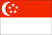

{kind=link}


![[Country map of Singapore]](../maps/sn-map.jpg)
| Singapore |  |
|
| | |
| Introduction |
Background: Founded as a British trading colony in 1819, Singapore joined Malaysia in 1963, but withdrew two years later and became independent. It subsequently became one of the world's most prosperous countries, with strong international trading links (its port is one of the world's busiest) and with per capita GDP above that of the leading nations of Western Europe.
| Geography |
Location: Southeastern Asia, islands between Malaysia and Indonesia
Geographic coordinates: 1 22 N, 103 48 E
Map references: Southeast Asia
Area:
total:
647.5 sq km
land:
637.5 sq km
water:
10 sq km
Area - comparative: slightly more than 3.5 times the size of Washington, DC
Land boundaries: 0 km
Coastline: 193 km
Maritime claims:
exclusive fishing zone:
within and beyond territorial sea, as defined in treaties and practice
territorial sea:
3 nm
Climate: tropical; hot, humid, rainy; no pronounced rainy or dry seasons; thunderstorms occur on 40% of all days (67% of days in April)
Terrain: lowland; gently undulating central plateau contains water catchment area and nature preserve
Elevation extremes:
lowest point:
Singapore Strait 0 m
highest point:
Bukit Timah 166 m
Natural resources: fish, deepwater ports
Land use:
arable land:
2%
permanent crops:
6%
permanent pastures:
0%
forests and woodland:
5%
other:
87% (1993 est.)
Irrigated land: NA sq km
Natural hazards: NA
Environment - current issues: industrial pollution; limited natural fresh water resources; limited land availability presents waste disposal problems; seasonal smoke/haze resulting from forest fires in Indonesia
Environment - international agreements:
party to:
Biodiversity, Climate Change, Desertification, Endangered Species, Hazardous Wastes, Law of the Sea, Nuclear Test Ban, Ozone Layer Protection, Ship Pollution
signed, but not ratified:
none of the selected agreements
Geography - note: focal point for Southeast Asian sea routes
| People |
Population: 4,151,264 (July 2000 est.)
Age structure:
0-14 years:
18% (male 390,352; female 365,730)
15-64 years:
75% (male 1,520,875; female 1,590,355)
65 years and over:
7% (male 124,413; female 159,539) (2000 est.)
Population growth rate: 3.54% (2000 est.)
Birth rate: 12.79 births/1,000 population (2000 est.)
Death rate: 4.21 deaths/1,000 population (2000 est.)
Net migration rate: 26.8 migrant(s)/1,000 population (2000 est.)
Sex ratio:
at birth:
1.08 male(s)/female
under 15 years:
1.07 male(s)/female
15-64 years:
0.96 male(s)/female
65 years and over:
0.78 male(s)/female
total population:
0.96 male(s)/female (2000 est.)
Infant mortality rate: 3.65 deaths/1,000 live births (2000 est.)
Life expectancy at birth:
total population:
80.05 years
male:
77.1 years
female:
83.23 years (2000 est.)
Total fertility rate: 1.16 children born/woman (2000 est.)
Nationality:
noun:
Singaporean(s)
adjective:
Singapore
Ethnic groups: Chinese 77%, Malay 14%, Indian 7.6%, other 1.4%
Religions: Buddhist (Chinese), Muslim (Malays), Christian, Hindu, Sikh, Taoist, Confucianist
Languages: Chinese (official), Malay (official and national), Tamil (official), English (official)
Literacy:
definition:
age 15 and over can read and write
total population:
91.1%
male:
95.9%
female:
86.3% (1995 est.)
| Government |
Country name:
conventional long form:
Republic of Singapore
conventional short form:
Singapore
Data code: SN
Government type: parliamentary republic
Capital: Singapore
Administrative divisions: none
Independence: 9 August 1965 (from Malaysia)
National holiday: National Day, 9 August (1965)
Constitution: 3 June 1959, amended 1965 (based on preindependence State of Singapore Constitution)
Legal system: based on English common law; has not accepted compulsory ICJ jurisdiction
Suffrage: 21 years of age; universal and compulsory
Executive branch:
chief of state:
President Sellapan Rama (S. R.) NATHAN (since 1 September 1999)
head of government:
Prime Minister GOH Chok Tong (since 28 November 1990) and Deputy Prime Ministers LEE Hsien Loong (since 28 November 1990) and Tony TAN Keng Yam (since 1 August 1995)
cabinet:
Cabinet appointed by the president, responsible to Parliament
elections:
president elected by popular vote for a six-year term; election last held 28 August 1999 (next to be held NA August 2005); following legislative elections, the leader of the majority party or the leader of a majority coalition is usually appointed prime minister by the president; deputy prime ministers appointed by the president
election results:
Sellapan Rama (S. R.) NATHAN elected president unopposed
Legislative branch:
unicameral Parliament (83 seats; members elected by popular vote to serve five-year terms)
elections:
last held 2 January 1997 (next to be held by 2002)
election results:
percent of vote by party - PAP 65% (in contested constituencies), other 35%; seats by party - PAP 81, WP 1, SPP 1; note - subsequent to the election, there was a change in the distribution of seats, the new distribution is as follows: PAP 80, WP 1, SPP 1, vacant 1
Judicial branch: Supreme Court, chief justice is appointed by the president with the advice of the prime minister, other judges are appointed by the president with the advice of the chief justice; Court of Appeals
Political parties and leaders: National Solidarity Party or NSP [C. K. TAN]; People's Action Party or PAP [GOH Chok Tong, secretary general] - the governing party; Singapore Democratic Party or SDP [CHEE Soon Juan]; Singapore People's Party or SPP [CHIAM See Tong]; Workers' Party or WP [J. B. JEYARETNAM and LOW Thia Khiang]
International organization participation: APEC, AsDB, ASEAN, Australia Group (observer), BIS, C, CCC, CP, ESCAP, G-77, IAEA, IBRD, ICAO, ICC, ICFTU, ICRM, IFC, IFRCS, IHO, ILO, IMF, IMO, Inmarsat, Intelsat, Interpol, IOC, ISO, ITU, NAM, OPCW, PCA, UN, UNCTAD, UNIKOM, UPU, WHO, WIPO, WMO, WTrO
Diplomatic representation in the US:
chief of mission:
Ambassador CHAN Heng Chee
chancery:
3501 International Place NW, Washington, DC 20008
telephone:
[1] (202) 537-3100
FAX:
[1] (202) 537-0876
consulate(s):
New York
Diplomatic representation from the US:
chief of mission:
Ambassador Steven J. GREEN
embassy:
27 Napier Road, Singapore 258508
mailing address:
FPO AP 96507
telephone:
[65] 476-9100
FAX:
[65] 476-9340
Flag description: two equal horizontal bands of red (top) and white; near the hoist side of the red band, there is a vertical, white crescent (closed portion is toward the hoist side) partially enclosing five white five-pointed stars arranged in a circle
| Economy |
Economy - overview: Singapore is blessed with a highly developed and successful free-market economy, a remarkably open and corruption-free business environment, stable prices, and the fifth highest per capita GDP in the world. Exports, particularly in electronics and chemicals, and services are the main drivers of the economy. The government promotes high levels of savings and investment through a mandatory savings scheme and spends heavily in education and technology. It also owns government-linked companies (GLCs) - particularly in manufacturing - that operate as commercial entities and account for 60% of GDP. As Singapore looks to a future increasingly marked by globalization, the country is positioning itself as the region's financial and high-tech hub.
GDP: purchasing power parity - $98 billion (1999 est.)
GDP - real growth rate: 5.5% (1999 est.)
GDP - per capita: purchasing power parity - $27,800 (1999 est.)
GDP - composition by sector:
agriculture:
NEGL%
industry:
28%
services:
72%
Population below poverty line: NA%
Household income or consumption by percentage share:
lowest 10%:
NA%
highest 10%:
NA%
Inflation rate (consumer prices): 0.4% (1999)
Labor force: 1.932 million (1998)
Labor force - by occupation: financial, business, and other services 38%, manufacturing 21.6%, commerce 21.4%, construction 7%, other 12%
Unemployment rate: 3.2% (1999 est.)
Budget:
revenues:
$13.9 billion
expenditures:
$16.9 billion, including capital expenditures of $8.1 billion (FY98/99 est.)
Industries: electronics, financial services, oil drilling equipment, petroleum refining, rubber processing and rubber products, processed food and beverages, ship repair, entrepot trade, biotechnology
Industrial production growth rate: 14% (1999 est.)
Electricity - production: 26.586 billion kWh (1998)
Electricity - production by source:
fossil fuel:
100%
hydro:
0%
nuclear:
0%
other:
0% (1998)
Electricity - consumption: 24.725 billion kWh (1998)
Electricity - exports: 0 kWh (1998)
Electricity - imports: 0 kWh (1998)
Agriculture - products: rubber, copra, fruit, vegetables; poultry, eggs, fish, vegetables, orchids, ornamental fish
Exports: $114 billion (1999)
Exports - commodities: machinery and equipment (including electronics) 63%, chemicals, mineral fuels (1998)
Exports - partners: US 19%, Malaysia 17%, Hong Kong 8%, Japan 7%, Taiwan 5%, Thailand 4%, UK 4%, China 3%, Germany 3% (1998)
Imports: $111 billion (1999)
Imports - commodities: machinery and equipment 57%, mineral fuels, chemicals, foodstuffs (1998)
Imports - partners: US 17%, Japan 17%, Malaysia 16%, Thailand 5%, China 5%, Taiwan 4%, Germany, Saudi Arabia (1998)
Debt - external: $NA
Economic aid - recipient: $NA
Currency: 1 Singapore dollar (S$) = 100 cents
Exchange rates: Singapore dollars (S$) per US$1 - 1.6733 (January 2000), 1.6950 (1999), 1.6736 (1998), 1.4848 (1997), 1.4100 (1996), 1.4174 (1995)
Fiscal year: 1 April - 31 March
| Communications |
Telephones - main lines in use: 54.6 million (including 46.62 million that serve facsimile machines, computers, and other communication devices) (1998)
Telephones - mobile cellular: 1.02 million (1998)
Telephone system:
good domestic facilities; good international service
domestic:
NA
international:
submarine cables to Malaysia (Sabah and Peninsular Malaysia), Indonesia, and the Philippines; satellite earth stations - 2 Intelsat (1 Indian Ocean and 1 Pacific Ocean), and 1 Inmarsat (Pacific Ocean region)
Radio broadcast stations: AM 0, FM 15, shortwave 5 (1998)
Radios: 2.55 million (1997)
Television broadcast stations: 4 (1997)
Televisions: 1.33 million (1997)
Internet Service Providers (ISPs): 8 (1999)
| Transportation |
Railways:
total:
38.6 km
narrow gauge:
38.6 km 1.000-m gauge
note:
there is a 83 km mass transit system with 48 stations
Highways:
total:
3,122 km
paved:
3,038 km (including 150 km of expressways)
unpaved:
84 km (1998)
Ports and harbors: Singapore
Merchant marine:
total:
891 ships (1,000 GRT or over) totaling 21,808,813 GRT/34,783,544 DWT
ships by type:
bulk 140, cargo 121, chemical tanker 66, combination bulk 6, combination ore/oil 6, container 162, liquified gas 26, livestock carrier 2, multi-functional large load carrier 3, petroleum tanker 294, refrigerated cargo 6, roll-on/roll-off 10, short-sea passenger 1, specialized tanker 12, vehicle carrier 36 (1999 est.)
note:
a flag of convenience registry; includes ships from 22 countries among which are Japan 41, Denmark 35, Sweden 28, Thailand 28, Hong Kong 26, Germany 19, Taiwan 19, and Indonesia 11 (1998 est.)
Airports: 9 (1999 est.)
Airports - with paved runways:
total:
9
over 3,047 m:
2
2,438 to 3,047 m:
1
1,524 to 2,437 m:
4
914 to 1,523 m:
1
under 914 m:
1 (1999 est.)
Heliports: 1 (1999 est.)
| Military |
Military branches: Army, Navy, Air Force, People's Defense Force, Police Force
Military manpower - availability:
males age 15-49:
1,278,525 (2000 est.)
Military manpower - fit for military service:
males age 15-49:
932,978 (2000 est.)
Military expenditures - dollar figure: $4.4 billion (FY98/99)
Military expenditures - percent of GDP: 4.9% (FY98/99)
| Transnational Issues |
Disputes - international: two islands in dispute with Malaysia
Illicit drugs: transit point for Golden Triangle heroin going to North America, Western Europe, and the Third World; also a money-laundering center